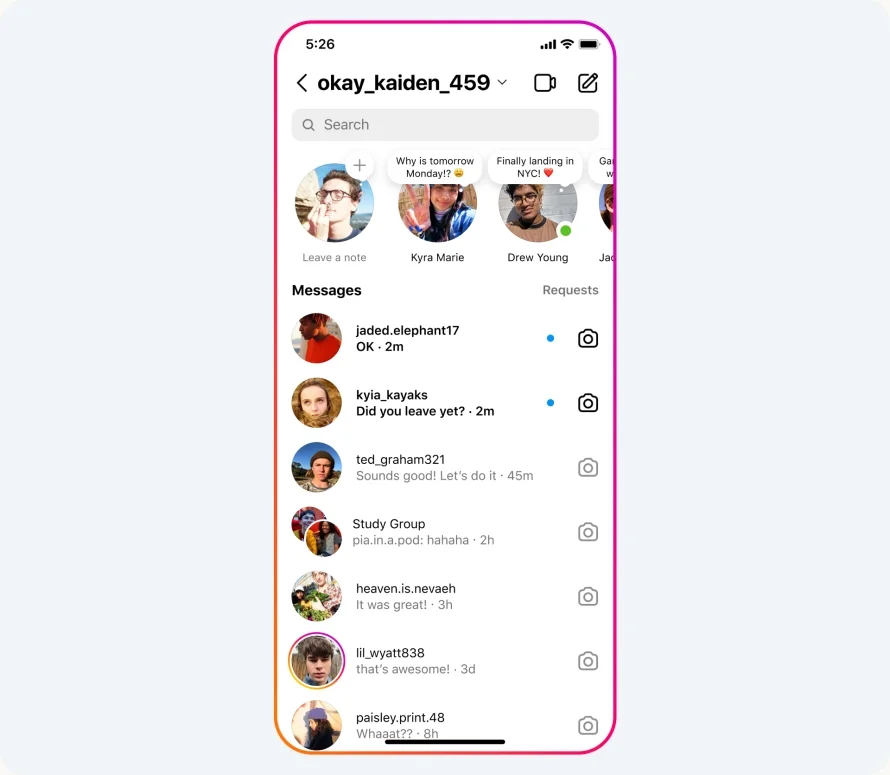

Alignment
Youtube
youtube.comYouTube is one of the wonderful apps in the online world for that reason was built over years with dedication, structure, talent and another stuff, all it is elements inside are perfect Alignment each other to bring the best experience to the consumer, making easier to navigate thought the website.
Contrast
Facebook is one the most used online app in the world, there millions of people who are connected by minute, much people spend thousand of minutes scrolling down to get in social world, for the reason Facebook has madden hers website with colors to helps our eyes to have a sweet and calm experience, facebook use color to combine the constrast and makes painless the consumer experience.
White Space and Clean Desing
Instragram
instagram.com Instragram was Desinged with purpuso to gave a good experience to the consumer, that is why its creators make it hers background simple and interactive, its clean desing helps to generate thousand of downloads per week. its appearance is simple but it says more than thousand of words.